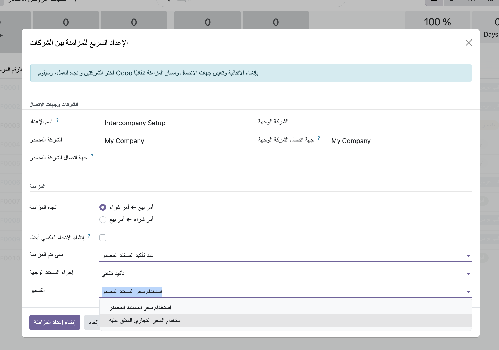

Configuration-driven intercompany agreements, counterparty mappings, routes, durable events, security, and Arabic translations for Odoo 20.
Keep destination documents as drafts during rollout. Validate company contacts, warehouses, currencies, journals, taxes, and access groups before enabling automatic confirmation.
Select the source and destination companies, choose the document direction, and start with draft creation. Odoo will identify the company counterparties and show the active route to authorized users.
